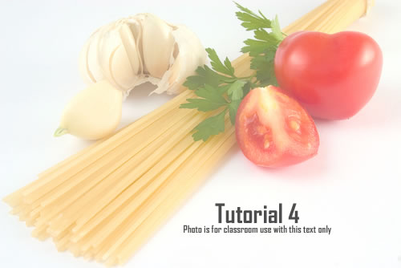
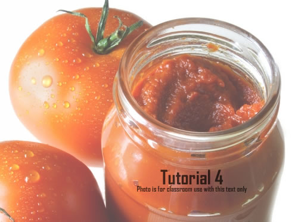
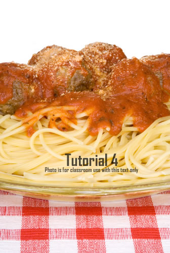

This Week's Recipe — Spaghetti with Meatballs
Spaghetti and meatballs is an inexpensive dish that everyone seems to enjoy. The trick is to get the spaghetti al dente, which is to cook the pasta so that it is not too firm (uncooked) and yet not too tender so that it becomes a pile of blonde mush.
Getting Started
Don't scrimp on the water. Cook your pasta in plenty of water in a high-rimmed saucepan. Some people like to add oil to the water, but oil and water don't mix, so a better strategy is to put a little extra virgin olive oil on the pasta after it's been cooked and drained. That will add flavor and keep the pasta from sticking.
Water does matter. If you live in an area where the water quality is not up to par, consider boiling the pasta in bottled water or filtered water from a tap if you have a filter installed on the faucet. The pasta can pick up bad odors and taste from water that does not taste good to begin with.
Boil that Water
Get the water to a roiling (that means "really bubbling") temperature. Toss in the pasta and stir with a wooden spoon or fork. Follow the package label for cooking times, but generally cook the pasta in boiling water for about 10-12 minutes. The last 3 minutes are critical. You want the pasta al dente (firm, yet tender). Try tasting some of the pasta every minute for the last three minutes. When you think you've got the right tenderness, strain the pasta in a colander and then pour cold water on the pasta to stop the pasta from cooking any further.
Make Some Sauce
For the sauce, you can use any commercial canned or jar sauce to save time. Most of the sauces sold in the supermarket are quite good. If you want to make your own sauce, chop up a medium-sized onion and 1 or 2 cloves of garlic. Toss the onion and garlic into a large saucepan. Add two 28-ounce cans of whole tomatoes, one 6-ounce can of tomato paste, and 1 tablespoon of extra virgin olive oil.
Heat in a saucepan and stir on very low heat. Some people feel that sauce should be cooked for several hours. Most people don't have such discriminating palettes, so a slow simmer on low heat for about 10-15 minutes is just fine.
Cook the Meatballs
Of course, while the pasta is cooking (set the timer to 10 minutes) you can make the meatballs and the sauce. For the meatballs, in a large mixing bowl, mix one cup of breadcrumbs, 2 large eggs, and 1 pound of lean, ground beef. You can season as you like with salt, pepper, chicken broth, oregano, and basil. For an added touch, you can also mix in 1/4 cup freshly grated Romano or Parmesan cheese. Mix all the ingredients together and spoon into meatballs about 1" round. After you've formed the meatballs, one by one, place the meatballs into a frying pan that has been greased with one or two tablespoons of extra virgin olive oil. Cook on low-to-medium heat until the meatballs are brown.
Pour it On
Put the pasta on a large platter, spoon on the meatballs, and cover with the sauce.
Ingredients
Pasta:
You may use either boxed pasta or refrigerated, fresh pasta.
- 1 pound spaghetti
Meatballs:
Use either 93% lean beef or a mix or ground turkey and ground pork.
- 1 cup of breadcrumbs
- 2 large eggs
- 1 pound lean ground beef
- 1/4 cup grated Romano cheese
- 1 teaspoon fresh oregano
- 1/2 teaspoon salt
- 1/4 teaspoon pepper
Tomato Sauce:
If you wish to have home made, rather than from a jar or can.
- 1 teaspoon vegetable oil
- 1 medium onion, chopped
- 2 cloves garlic, chopped
- 2 28-ounce cans whole tomatoes
- 1 6-ounce can tomato paste
- lightly salt and pepper to taste